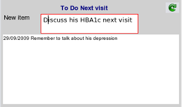

|  |
- As you add a new scratchpad item the editing area is outlined in red indicating data needs to be saved.
- If you delete the text in before saving, or click the
.image clinical/scratchpad/scratchpad_reset.png
button, then the editing area is reset.
- After hitting the enter key, the new item is transferred to the scratchpad list.
|